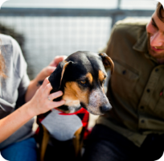
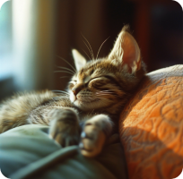
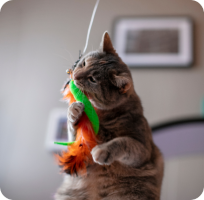
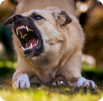
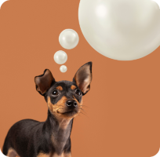
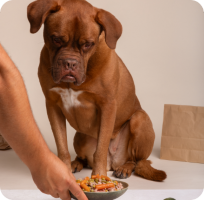
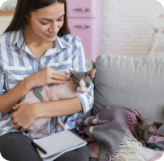

Benefícios da adoção
Benefícios da adoção
para ansiedade e depressão

Por que os gatos dormem tanto?

10 sinais de que
10 sinais de que
seu gato está feliz e saudável

Raiva canina: tudo oque
Raiva canina: tudo oque
você precisa saber
O que é Leishmaniose e como
ela afeta seu pet?

As Raças caninas mais
As Raças caninas mais
inteligentes

Alimentação Saudável: Garantindo
Alimentação Saudável: Garantindo
o Bem-Estar do seu cão

Adoção vs. Compra: Por que